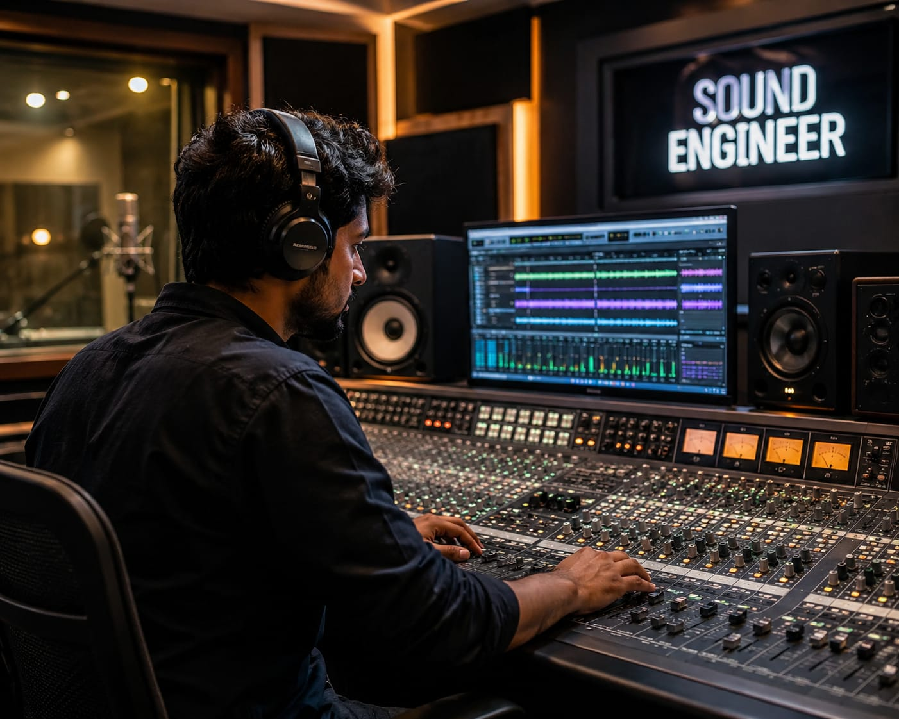

- You have listened to songs in movies, albums, or music streaming platforms.
- Someone works behind the scenes to record, mix, arrange, and improve those songs.
- These professionals are called Music Producers.
- 👉 In simple words: Music Producers create, arrange, record, and improve music tracks using instruments, studio equipment, and digital music software.
Music Producer
🧑🎨 What Do They Do?

🎓 How to Become a Music Producer
These beginner-level courses help students learn music production, beat making, sound recording, mixing, digital audio workstations, and studio production techniques.
Certificate in Music Production
Duration: 3 – 6 Months
Eligibility: Class 10 Pass
Exam: Direct Admission
Diploma in Sound Engineering and Music Production
Duration: 1 Year
Eligibility: Class 10 Pass
Exam: Basic Aptitude Test
Note: Most beginner music production courses after 10th focus on practical studio skills, creativity, and music software training rather than national-level entrance exams.
These degree-level courses help students learn advanced music production, studio recording, sound engineering, audio editing, mixing, mastering, and professional music software workflows.
BSc in Sound Entertainment and Music Technology
Duration: 3 Years
Eligibility: Class 12 Pass
Exam: University Entrance Test / Interview
BA (Hons) in Music Production
Duration: 3 Years
Eligibility: Class 12 Pass
Exam: Practical Portfolio Review
📝 Exam Details
(Click on the exam name to see full details)
University Entrance Test Interview Practical Portfolio ReviewNote: Most music production degree programs after 12th focus heavily on studio practice, audio software skills, and portfolio-based learning. Some institutes may conduct interviews or practical assessments instead of written exams.
These postgraduate courses help students specialize in advanced sound design, music production, studio recording, audio engineering, mixing, mastering, and professional soundtrack creation.
PG Diploma in Sound Recording and Sound Design
Duration: 1 – 2 Years
Eligibility: Graduate
Exam: National Level Entrance Test (FTII JET)
MSc in Sound Design and Audio Production
Duration: 2 Years
Eligibility: Graduate (BSc/BTech/BA with music or sound backgrounds)
Exam: University Entrance Exam
Note: Most postgraduate music production and sound design programs focus on advanced studio practice, live recording, sound editing, and professional audio production workflows.
These online music production and audio engineering programs help students learn beat making, sound mixing, mastering, studio recording, digital audio workstations (DAWs), and professional music production techniques.
Introduction to Music Production
Duration: 4 – 6 Weeks
Eligibility: Open to All
Exam: No Exam
Provider: Coursera
Music Production Masterclass (DAW Specific)
Duration: 2 – 10 Hours
Eligibility: Open to All
Exam: No Exam
Provider: Udemy
The Art of Mixing and Music Production
Duration: 5+ Hours
Eligibility: Open to All
Exam: No Exam
Provider: MasterClass Platform
Electronic Music Production and Beat Making
Duration: 1 – 3 Hours
Eligibility: Open to All
Exam: No Exam
Provider: Skillshare
Advanced Audio Engineering and Digital Audio Workstations
Duration: 3 Months
Eligibility: Open to All
Exam: Digital Track Submission
Provider: SWAYAM / Private Media Academies
Note: Most online music production courses focus on practical audio projects, mixing exercises, beat creation, and digital music production assignments rather than written exams.
Note:
(Age limits, marks, and admission process may vary depending on the college or state. These courses are available in many colleges and universities across India. You can choose colleges based on your location, budget, and entrance exams.)
🏛️ Top Colleges & Institutes for Music Producers in India
(Tap on a college to view details)
After 10th (Certificates & Short-Term)
The True School of Music (Vijaybhoomi University), Mumbai School of Bollywood Music, Mumbai Crypto Cipher Academy, New DelhiAfter 12th (Degrees & Professional Diplomas)
Seamedu Institute of Media & Cinema (Ajeenkya DY Patil University), Pune Whistling Woods International, Mumbai SoundideaZ Academy, MumbaiAfter Graduation (PG & Advanced Craft)
Film and Television Institute of India (FTII), Pune Sri Aurobindo Centre for Arts and Communication (SACAC), New Delhi Sound Engineering Academy (SEA), Trivandrum💻 Top Online Platforms
Coursera (Introduction to Music Production & Ableton Live) Udemy (Music Production Masterclass & FL Studio/Logic Pro) MasterClass (The Art of Mixing and Music Production) Skillshare (Electronic Music Production & Beat Making) SWAYAM (Advanced Audio Engineering & Digital Audio Workstations)STEP 1
Imagine you are working as a Music Producer.
STEP 2
A singer, rapper, filmmaker, or content creator approaches you to produce music for their project.
STEP 3
You start creating beats, recording sounds, arranging instruments, and experimenting with music software.
STEP 4
You spend hours mixing, editing, and improving the track until the final sound is ready.
STEP 5
Once the song, album, or soundtrack is released, people start listening to the music on streaming platforms, videos, and social media.
STEP 6
If this excites you, this career may suit you.
Where do Music Producers work? (Job Roles + Growth)
These are some roles you can explore in music production, beat making, audio engineering, mixing, and studio recording.
You usually start with beginner roles and grow with experience.
🟢 Beginner Roles
🎙️
Assistant Sound Recorder
(After Certificate in Music Production / Introduction to Music Production)
They set up studio microphones and manage basic software operations during recording sessions.
🥁
MIDI Drum Programmer / Beat Maker
(After Diploma in Sound Engineering / Electronic Music Production)
They create drum loops, synth beats, and rhythm tracks using digital music software.
🔵 Mid-Level Roles
🎚️
Commercial Mixing Engineer
(After BA (Hons) in Music Production / The Art of Mixing)
They balance audio levels, improve sound clarity, and add digital effects to songs and albums.
🌐
Independent Beat Producer
(After BSc in Sound Technology / Music Production Masterclass)
They create and sell original beats and backing tracks for singers, rappers, and online creators.
🟣 Advanced Roles
🎼
Chief Music Producer
(After PG Diploma in Sound Recording / Advanced Audio Engineering)
They supervise the complete production of albums, films, or digital music projects.
🏢
Studio Head / Chief Audio Engineer
(After MSc in Sound Design)
They manage professional recording studios and oversee advanced audio systems and acoustic design.
🎬
International Film & OTT Industry
To create songs, background scores, soundtracks, and audio production for films and web series.
🎧
Recording Studios & Music Labels
They work with singers, rappers, and composers to record and produce professional music tracks.
🌐
Gaming & Digital Media Studios
They create beats, sound effects for games, animation, podcasts, and digital media.
🎼
Live Events & International Collaborations
Collaborate with global artists for concerts, albums, tours, and live music productions.
(Click Yes or No for each question)
1. Do you enjoy creating music?
2. Whenever you listen to music, do you notice the different instruments and sounds used in it?
3. Are you interested in learning musical instruments and music software?
4. Have you ever thought about learning to play a musical instrument ?
5. Are you interested in building a career related to music and sound creation?